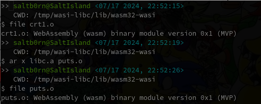

WASM实践
Table of Contents
在去年通过阅读 The Art Of WebAssembly 学习 WebAssembly (简称 WASM) 之后基本上再无使用过 WASM 了,
这本书算得上是一本不错的 WASM 入门书, 通过 WAT 介绍 WASM 的一些概念, 但关于实际开发的内容很少.
这本书也有介绍到 Emscripten 这种使用的工具链, 我也尝试过这个工具, 不过这个工具用起来有一种很难受的感觉:
告诉你只需要那么做, 这么做就可以了, 把里面重要的细节都藏起来了.
这样会出现一个问题: Emscripten 就像是针对各种各样的问题提供了对应的解决方案, 只要你遇到了这些问题, 直接按照它提供的方案即可;
然而, 实际开发的问题远远不止这些, 要能够解决这些问题就得自己动手给出解决方案.
发现了这个真相后我就失望的中断了 WASM 的实践学习.
正如所有的计算机问题一样, 只要了解底层原理的人才有创造解决方案的能力.
这几天有幸逛到 Tsoding 老哥的 Easy Web Games in C 的视频, 视频内容就是在不依赖 Emscripten 的情况下把 raylib 程序移植到浏览器上;
他本人也是支持了解底层这个观点, 但同时也说了不是反对使用 Emscripten, 而是为了让自己拥有解决预想外问题的能力.
在看完他的视频后我重新燃起了探索的欲望, 因此, 这片文章是对 Tsoding 视频内容的整理以及拓展, 势必要在实际开发中掌握 WASM 的使用.
他还有另外一个视频介绍 WebAssembly 和 WASI 的, 很好的介绍了 WebAssembly 的各个概念, 内容上几乎可以替代 The Art Of WebAssembly 了,
后面还演示了如何使用 Rust 生成 WebAssembly 模块, 如果你是个想学习 WebAssembly 的 Ruster, 这个视频请不要错过.
我这篇笔记则是围绕如何使用 C 生成 WebAssembly 模块展开的.
"Easy Web Games in C" 的内容总结
这里我本人跟练的项目地址, 和视频的会有些出入, 这是因为在跟练过程中冒出了一些个人想法.
视频内容分三部分:
前期小部分演示了如何使用 raylib 写一个 Linux 版本的例子;
中期部分演示了如何按照 raylib 官方文档的指示使用 Emscripten 编译链接 C 源文件(game.c)和 wasm 版 raylib 生成浏览器项目;
下半部分演示了用 clang 编译 game.c 得到 game.wasm, 但不让它和 raylib 进行链接,
然后使用 JavaScript 手动实现 game.c 所使用到的 raylib API, 提供给编译出来的 game.wasm 调用, 让项目最终运行起来.
这两种方法各有优劣:
使用 Emscripten 的优点是可以减少工作量,
缺点是需要对 game.c 进行改造成适用于浏览器的发布, 也就是说, 如果想让 game.c 发布到原生平台和浏览器, 那么需要写两套代码;
另外一个缺点就是这个方式生成的 wasm 模块会相对较大, raylib 算是依赖较少的 C 库了, 实际开发中会有不少依赖复杂的库, 他们的 wasm 模块会异常大体积.
其实有办法可以在不写两套
C代码的情况下使用Emscripten生成项目.不过, 这就违背了
raylib文档中的 "Avoid raylibwhile(!WindowShouldClose())loop" 了,这是因为浏览器采用了协作式多任务(
co-operative multitasking)事件模型:每个事件都有有一个回合(
turn, 我这里就采用回合制游戏名词作为翻译)用来执行, 在执行完后把控制权交换给浏览器, 浏览器再把控制权交给另外一个事件.这就是为什么在浏览器里面执行死循环会导致浏览器卡住, 因为死循环并没有执行完毕这一动作, 因此也没有把控制权交还给浏览器.
而
while(!WindowShouldClose())编译成WASM后就是一个死循环.当然官方也意识到了开发者可能无法避免使用 "
while(!WindowShouldClose())loop", 因此给出了 ASYNCIFY 解决方案让代码以异步方式执行.
而第二种方法: 手动实现 raylib 的 API 提供给 game.wasm, 优点则是不依赖复杂的工具链 Emscripten, game.wasm 体积小, 无须写两套 game.c,
缺点就是工作量大, 必须手动通过 JavaScript 实现一切使用到的 raylib API 和 libc API.
这里引出一个思考: 什么情况下要
JavaScript去实现API提供给WASM呢? 为什么不直接在C里面实现呢?其实要通过
JavaScript实现API有两种情况.
Emscripten的GLFW API也是通过JavaScript实现的, 在浏览器上和绘制相关的问题基本上都是绕不开Canvas的,而
WASM是不能直接操作DOM的, 这部分功能 只能 在JavaScript进行封装, 并作为imports提供给WASM调用.所以在实际开发中, 要识别哪些功能是绕不开浏览器的, 这些功能就
JavaScript进行封装, 其他的尽量交给C来完成, 这就是第一种场景.另外一种场景是想要手动链接
WASM模块: 通过JavaScript实现WASM模块之间的依赖关系从而实现模块之间的链接.第二种方法在本质上相当于编译链接中的链接, 视频的例子是便于观众理解
wasm在浏览器上从加载到链接再到调用一整套流程.视频里还特别演示了
game.wasm暴露的C函数的参数在JavaScript里面是怎么样的, 通过JavaScript实现这个函数要如何处理这些参数.
视频中遇到的问题
clang 的 –target 选项
使用 clang 编译 WASM 时, 需要设置 --target 选项为符合产生 WASM 的值, --target 值需要符合一种叫做 target triple 的格式:
ARCHITECTURE-VENDOR-OPERATING_SYSTEM ARCHITECTURE-VENDOR-OPERATING_SYSTEM-ENVIRONMENT
参考源代码来讲:
ARCHITECTURE 的值是 <ArchType><SubArchType>, 其中 <SubArchType> 在 <ArchType> 满足某些值的情况下才有;
VERDOR 的值是 <VendorType>;
OPERATING_SYSTEM 的值是 <OSType>;
ENVIRONMENT 的值是 <EnvironmentType>.
<ENUM-NAME>是C/C++中枚举类型的定义.
视频中的 --target 是 wasm32, 相当于 wasm32-unknow-unknow;
由于我本人的代码中没有像视频中那样把 math.h 的 API 声明复制出来进行忽略, 而是使用 wasi-libc 进行链接(后面会提到),
所以我的 --target 是 wasm32-unknown-wasi, 目的是为了让 wasm-ld 方便的找到 wasi-libc 的头文件和库文件.
我的 Makefile 留了一个 --target=wasm32 的 Makefile rule 的注释, 该注释等同于 --target=wasm32-unknown-wasi 的 Makefile rule.
clang 编译优化会把没用上的 symbols 去掉
按照视频里面 Makefile,
game.wasm: game.c
clang --target=wasm32 -I./linux/include --no-standard-libraries -Wl,--no-entry -Wl,--allow-undefined -o game.wasm game.c
我们实际编译出来的 game.wasm 所对应的 wat 是这样的:
(module $game.wasm (table (;0;) 1 1 funcref) (memory (;0;) 2) (global $__stack_pointer (mut i32) (i32.const 66560)) (export "memory" (memory 0)))
视频里面编译出来的结果 大概 (本人没法保证完全一样)如下:
(module $game.wasm (type (;0;) (func (param i32 i32 i32))) (type (;1;) (func (result i32))) (type (;2;) (func)) (type (;3;) (func (param i32))) (type (;4;) (func (param i32 i32) (result i32))) (import "env" "InitWindow" (func $InitWindow (type 0))) (import "env" "WindowShouldClose" (func $WindowShouldClose (type 1))) (import "env" "BeginDrawing" (func $BeginDrawing (type 2))) (import "env" "ClearBackground" (func $ClearBackground (type 3))) (import "env" "EndDrawing" (func $EndDrawing (type 2))) (import "env" "CloseWindow" (func $CloseWindow (type 2))) (func $__original_main (type 1) (result i32) (local i32 i32 i32 i32 i32 i32 i32 i32 i32 i32 i32 i32 i32 i32 i32 i32 i32 i32 i32 i32 i32 i32) global.get $__stack_pointer local.set 0 i32.const 16 local.set 1 local.get 0 local.get 1 i32.sub local.set 2 local.get 2 global.set $__stack_pointer i32.const 0 local.set 3 local.get 2 local.get 3 i32.store offset=12 i32.const 800 local.set 4 i32.const 450 local.set 5 i32.const 1024 local.set 6 local.get 4 local.get 5 local.get 6 call $InitWindow block ;; label = @1 loop ;; label = @2 call $WindowShouldClose local.set 7 i32.const -1 local.set 8 local.get 7 local.get 8 i32.xor local.set 9 i32.const 1 local.set 10 local.get 9 local.get 10 i32.and local.set 11 local.get 11 i32.eqz br_if 1 (;@1;) call $BeginDrawing i32.const 230 local.set 12 local.get 2 local.get 12 i32.store8 offset=8 i32.const 41 local.set 13 local.get 2 local.get 13 i32.store8 offset=9 i32.const 55 local.set 14 local.get 2 local.get 14 i32.store8 offset=10 i32.const 255 local.set 15 local.get 2 local.get 15 i32.store8 offset=11 local.get 2 i32.load offset=8 align=1 local.set 16 local.get 2 local.get 16 i32.store offset=4 i32.const 4 local.set 17 local.get 2 local.get 17 i32.add local.set 18 local.get 18 call $ClearBackground call $EndDrawing br 0 (;@2;) end end call $CloseWindow i32.const 0 local.set 19 i32.const 16 local.set 20 local.get 2 local.get 20 i32.add local.set 21 local.get 21 global.set $__stack_pointer local.get 19 return) (func $main (type 4) (param i32 i32) (result i32) (local i32) call $__original_main local.set 2 local.get 2 return) (table (;0;) 1 1 funcref) (memory (;0;) 2) (global $__stack_pointer (mut i32) (i32.const 66592)) (export "memory" (memory 0)) (export "main" (func $main)) (data $.rodata (i32.const 1024) "Hello, from WebAssembly\00"))
而实际中 Makefile 要这么写才能和视频中得到差不多一样的结果:
game.wasm: game.c
clang --target=wasm32 -I./linux/include --no-standard-libraries -Wl,--no-entry -Wl,--allow-undefined -o game.wasm game.c -Wl,--export=main
和视频不一致的原因不明, 可能是编译器的版本不一样, 视频中用的是 clang14, 本人用的是 clang18.
wasm-ld 的 –allow-undefined 选项
作用是告诉链接器保留未定义的符号(symbols)并不发出报错.
该选项在新版 wasm-ld 中已经是老选项了, 被 --unresolved-symbols=ignore-all 和 --import-undefined 等同了.
clang 的 -nostartfiles 选项的作用
因为 wasm-ld 使用了 --no-entry 选项, 所以 game.wasm 是没有入口(_start)的, 相当于 C 源代码没有 main 函数一样.
因此也不需要执行 main 函数前的初始化工作, -nostartfiles 选项就是告诉链接器不需要负责初始化工作的目标文件(比如下面会提到的 ctr1.o).
clang 的 –sysroot 选项的作用
用来设置编译链接时查找头文件/库文件的根目录, 在 Linux 上默认的更目录是 /usr, 从 /usr/lib 查找库, 从 /usr/include 查找头文件,
--sysroot=/tmp/wasi-libc 则会让编译器/链接器从 /tmp/wasi-libc/include 和 /tmp/wasi-libc/lib 中找文件.
之所以用这个选项是因为我的 game.c 使用了 libc 的函数, game.wasm 需要链接 WASM 的 libc, 这些文件并非位于系统定义的目录中.
/tmp/wasi-libc是需要自己手动安装的,git clone https://github.com/WebAssembly/wasi-libc cd wasi-libc make install INSTALL_DIR=/tmp/wasi-libc
wasm-ld: error: cannot open crt1.o: No such file or directory
原问题是出现在视频里面的(这里按照我的 Makefile 调整一下进行复现), Makefile 大概如下:
game.wasm: game.c clang \ -v \ --target=wasm32 \ --sysroot=/tmp/wasi-libc \ -Wl,--verbose \ -I./wasm/include \ -L./wasm/lib \ -I/tmp/wasi-libc/include/wasm32-wasi \ -L/tmp/wasi-libc/lib/wasm32-wasi \ -o $@ $^ \ '-l:libraylib.a' \ -lm
首先 crt1.o 用于可执行文件的链接, 负责可执行文件 main 函数在执行前的所有初始化工作.
问题在于链接器 wasm-ld 默认会在 sysroot 下的 lib 目录查找 crt1.o, wasi-libc 的 crt1.o 是位于 /tmp/wasi-libc/lib/wasm32-wasi 中.
解决这个问题有两个方法:
给
crt1.o建立一个软链接到sysroot的lib中:ln -sf /tmp/wasi-libc/lib/wasm32-wasi/crt1.o /tmp/wasi-libc/lib/crt1.o.- 把
--target设置为wasm32-unknown-wasi,wasm-ld便能准确定位到crt1.o.
观后感
在看到视频里面 Tsoding 因为 raylib 依赖标准库里面的 math.h 让把 math.h 所有函数声明拷贝到 game.c 的时候,
我冒出了一个想法: 如何在不依赖 Emscripten 的情况下让 WASM 模块链接自己想要的库?
于是就以链接 C 标准库为目标进行检索, 一番折腾后才发现 WebAssembly System Interface (简称 WASI), 提供了各种可用于 WASM 编译链接的目标文件(动态库/静态库), 这些目标文件提供了适用于浏览器以及浏览器以外的运行时的 API.
在前面设置好的 sysroot 的 /tmp/wasi-libc/lib/wasm32-wasi 可以看到各种目标文件, 这些目标文件不是 ELF 文件, 而是和 game.wasm 一样都是 WebAssembly binary module.

Figure 1: 原生 libc 目标文件的文件类型

Figure 2: wasi-libc 目标文件的文件类型
随后又冒出了一个想法: 如何自己手动"造出"这种 WASM 库?
答案就是文章的后半部分了.
mini-wasm-lib workshop
这部分将会开发一个名为 mini-wasm-lib 的 WASM 库, 就像 raylib 一样能够发布原生版本和 WASM 版本的静态库:
来探讨如何把 C 库构建成 WASM 库.
构建思路
C 库的构建步骤一般是这样的:
- 使用
clang -c/gcc -c把所有.c文件编译成目标文件.o; - 使用
llvm-ar/ar把所有.o文件归档成一个静态库文件.a, 或者一个动态库文件.so; - 想使用该库只要
clang -l/gcc -l让调用该库的目标文件或者.c文件进行链接即可.
其实 WASM 库的构建步骤也是差不多:
- 使用
clang --target=wasm32-unknown-wasi -c把所有.c文件编译成WASM目标文件.o; - 使用
llvm-ar把所有.o文件归档成一个静态库文件.a; - 想使用该库只要
clang -l让调用该库的目标文件或者.c文件进行链接即可.
从原生到 WASM 的转变, 不同之处基本上只是换了编译器/编译选项.
例子展示
作为例子, 这个库必须非常简单, 有 4 个源文件(lib{0,1,2,3}.c)和 1 个头文件(include/mini.h):
lib0.c提供函数int add(int, int)的实现int add(int a, int b) { return a + b; }
lib1.c提供函数int sub(int, int)的实现int sub(int a, int b) { return a - b; }
lib2.c提供函数int mul(int, int)的实现int mul(int a, int b) { return a * b; }
lib3.c提供函数float div(int, int)的实现float div(int a, int b) { return a * 1.0f / b; }
include/mini.h是提供这些函数声明的头文件#ifndef MINI_H #define MINI_H int add(int, int); int sub(int, int); int mul(int, int); float div(int, int); #endif
这个库会把 lib{0,1,2,3}.c 编译成 4 个目标文件 lib{0,1,2,3}.o, 使用 llvm-ar 把这些目标文件归成一个档: libmini.a.
这个档就是 mini-wasm-lib 发布的静态库文件了, 会发布两个版本: 原生和 WASM.
源代码很简单, 重点在于构建上, 所以 Makefile 才是重点:
.PHONY: clean CC := clang AR := llvm-ar OBJS := lib0.o lib1.o lib2.o lib3.o TARGET ?= NATIVE CFLAGS ?= LIB_ROOT := lib LIB_DIR ?= ifeq ($(TARGET), WASM) CFLAGS = --target=wasm32-unknown-wasi LIB_DIR = $(LIB_ROOT)/wasm else CFLAGS = LIB_DIR = $(LIB_ROOT)/native endif libmini.a: $(OBJS) mkdir -p $(LIB_DIR) $(AR) rcs $(LIB_DIR)/$@ $^ rm -rf $(OBJS) $(OBJS): %.o: %.c mkdir -p $(LIB_DIR) $(CC) $(CFLAGS) -c -o $@ $^ clean: rm -rf $(LIB_ROOT)
需要注意的是, 这里一整套工具连都是使用的
LLVM的, 非Unix/GNU.用
clang而不是cc/gcc;用
llvm-ar而不是ar;用
llvm-nm而不是nm;用
llvm-stripe而不是stripe;用
llvm-ranlib而不是ranlib.
构建原生静态库如下:
make
构建 WASM 静态库如下:
make TARGET=WASM
这就是不使用 Emscripten 构建 WASM 库的方法, 这个例子没有使用到任何第三方库,
如果要使用, 那么就得使用 WASI 或者自己按照制作该库的方法把第三方库编译成 WASM 库再进行链接.
WASI 的使用方法可以参考我的 easy-web-game-in-c 项目的 game.wasm 是如何链接 wasi-libc 的.
学习 raylib 的 WASM 编译
mini-wasm-lib 的构建方式并非主流, 其意义是告诉人们如何以手工制造的方式去了解一个东西生产的最基本流程.
在生产环节中, 虽然最基本流程可以进行生产, 但如果有更好更高效率的方式那必然是采取更优解.
目前在构建 WASM 这一块工作上, Emscripten 就是更优解: 本身就提供了很多 API 实现用于构建 WASM.
raylib 的 WASM 编译教程 是一个非常不错的教学参考.
其实和 mini-wasm-lib 的构建思路是一样的, 只是把编译器和归档工具换掉了:
clang 换成 emcc, llvm-ar 换成 emar.
emcc内部就使用clang进行WASM编译.
emar内部就使用llvm-ar完成归档工作.
Emscripten提供了emmake和emconfigure来替换构建系统里面的AR变量为emar, 因为 ar 不支持 WASM 的目标文件.如果构建系统是写死用
ar的话, 那么就没办法了.类似的工具还有内部使用
llvm-ranlib的emranlib, 内部调用llvm-nm的emnm.这就是为什么说构建思路是一致的, 不一样的地方就是
emcc和emar多了一些方便于构建WASM文件的选项.
emcc -c rcore.c -Os -Wall -DPLATFORM_WEB -DGRAPHICS_API_OPENGL_ES2 emcc -c rshapes.c -Os -Wall -DPLATFORM_WEB -DGRAPHICS_API_OPENGL_ES2 emcc -c rtextures.c -Os -Wall -DPLATFORM_WEB -DGRAPHICS_API_OPENGL_ES2 emcc -c rtext.c -Os -Wall -DPLATFORM_WEB -DGRAPHICS_API_OPENGL_ES2 emcc -c rmodels.c -Os -Wall -DPLATFORM_WEB -DGRAPHICS_API_OPENGL_ES2 emcc -c utils.c -Os -Wall -DPLATFORM_WEB emcc -c raudio.c -Os -Wall -DPLATFORM_WEB emar rcs libraylib.a rcore.o rshapes.o rtextures.o rtext.o rmodels.o utils.o raudio.o
raylib 是一个值得 C 新手开发者学习的项目, 算是一个简单易上手的项目, 文档也非常完善, 哪怕是老手也多少能学到点东西.
另外, 对于 WASM 的实际开发还得多阅读 Emscripten 的文档, 配合以 raylib 作为例子进行学习是非常不错的.
数据传递
这里将会学习 C 代码在被编译成 WASM 后, C 的数据在 WASM 上会是什么样的,
并且重点演示在 JavaScript 里面如何处理这些数据, 以及如何使用 JavaScript 封装数据传回 WASM 中.
首先, 数据在 C 和 WASM 中是一样的;
其次, WASM 的字节序是 little endian;
最后, 架构所对应的位宽也是和 C 语言一样,
比如, 在 wasm32 下 C 语言的 long int 在 WASM 上是 4 个字节;
在 wasm64 下 C 语言的 long int 在 WASM 上是 8 个字节.
剩下的就是如何处理数据了, 后面的代码全部来源于这个项目: wasm-data-passing-examples.
\(\text{C} \stackrel{\text{WASM}}{\longrightarrow} \text{JavaScript}\)
字符串(string), 指针(pointer), 数组(array)和结构体(struct)在 JavaScript 中是 WebAssembly.Memory.buffer 上的索引, 都是 JavaScript 中的 number 类型.
枚举(enum)类型本质上是由 int 类型构成的, 因此枚举变量正如 int 类型那样, 在 C 里面是多少, 在 JavaScript 就是多少, 在 JavaScript 里面也是 number 类型.
联合体(union)在 JavaScript 中同样是 WebAssembly.Memory.buffer 上的索引, 但是它并不像 C 语言那样复用同一块地址, 等会会说明.
接下来会直接以代码展示在 JavaScript 里面处理从 C 传过来的数据, 为了保持篇幅短小, 这里先约定处理 WASM 模块的 JavaScript 代码:
// glup.js let wasmExports = undefined; WebAssembly.instantiateStreaming( fetch('c.wasm'), { env: { // IMPORTS: 实现在 C 中声明且待实现的函数 } } ).then((w) => { wasmExports = w.instance.exports; wasmExports.test(); // EXPORTS: 调用由 C 语言实现的函数 });
然后在 IMPORTS 里面添加上对应的 JavaScript 函数.
最后我们的 Makefile 如下:
.PHONY: clean c.wasm: main.c clang \ -v \ --target=wasm32 \ --no-standard-libraries \ -nostartfiles \ -Wl,--no-entry \ -Wl,--unresolved-symbols=ignore-all \ -Wl,--import-undefined \ -Wl,--export=test,--export=from_js_to_c_struct,--export=from_js_to_c_string,--export=from_js_to_c_enum,--export=from_js_to_c_union,--export=from_c_to_js_return_struct,--export=sum_for_struct,--export=from_c_to_js_return_string,--export=from_c_to_js_return_union,--export=from_c_to_js_return_function_ptr,--export=from_js_to_c_array \ -o $@ $^ clean: rm -rf c.wasm
字符串 (string)
// main.c void from_c_to_js_string(char *); void test(void) { from_c_to_js_string("Hello, world!"); }
// glup.js const from_c_to_js_string = (str_addr) => { console.group("============================="); console.log(`from_c_to_js_string(${str_addr})`); const mem = new Uint8Array(wasmExports.memory.buffer); // C 语言的字符串是以 '\0' 结尾的, 所以找到 str_addr 之后的第一个 '\0' 字符就可以算出字符串长度 let len = 0; let ptr = str_addr; while (mem[ptr] != 0) { len++; ptr++; } const bytes = new Uint8Array(wasmExports.memory.buffer, str_addr, len); console.log(new TextDecoder().decode(bytes)); console.groupEnd(); }; // 在 IMPORTS 中添加 from_c_to_js_string
数组 (Array)
// main.c void from_c_to_js_array(int[], int); void test(void) { from_c_to_js_array((int[]){ 1, 2, 3, 4 }, 4); }
// glup.js const from_c_to_js_array = (arr_addr, len) => { console.group("============================="); console.log(`from_c_to_js_array(${arr_addr}, ${len})`); /* arr 是 int 数组: (int []){ 1, 2, 3, 4 }, 长度为 4 个元素, 每个元素 4 bytes, 也就是 32 bits. */ const int_arr = new Uint32Array(wasmExports.memory.buffer, arr_addr, len); console.log(int_arr); console.groupEnd(); }; // 在 IMPORTS 中添加 from_c_to_js_array
在处理上和字符串很接近, 区别在于每个元素的大小解析不一样.
结构体 (struct)
// main.c typedef struct { int a; long b; } example_struct; /* size = 16 bytes in 64-bit, 8 bytes in 32-bit */ void from_c_to_js_struct(example_struct); void test(void) { from_c_to_js_struct((example_struct){ .a = 10, .b = 200 }); }
// glup.js const from_c_to_js_struct = (example_struct_addr) => { console.group("============================="); console.log(`from_c_to_js_struct(${example_struct_addr})`); /* { a: int, b: long } 在 wasm32 的情况下, size 为 8 bytes; 在 wasm64 的情况下, size 为 16 bytes; 到目前为止只支持 wasm32. */ // Uint32 = 4 bytes * 8 bits = 32 bits const data = new Uint32Array(wasmExports.memory.buffer, example_struct_addr, 2); console.log(`example_struct = { a=${data[0]}, b=${data[1]} }`); console.groupEnd(); }; // 在 IMPORTS 中添加 from_c_to_js_struct
联合体 (union)
// main.c typedef union { char c; long li; } example_union; /* size = 8 bytes in 64-bit, 4 bytes in 32-bit */ void from_c_to_js_union(example_union); void test(void) { example_union un; un.c = 'a'; from_c_to_js_union(un, 0); un.li = 100; from_c_to_js_union(un, 1); un.c = 'B'; from_c_to_js_union(un, 0); }
// glup.js const from_c_to_js_union = (example_union_addr, field_index) => { console.group("============================="); console.log(`from_c_to_js_union(${example_union_addr})`); /* example_union 为 { c: char, li: long }, 联合中大小最大的字段 li, 类型是 long, 因此, example_union 在 wasm32 下大小为 4 个字节, 在 wasm64 下大小为 8 个字节; */ const bytes = new Uint8Array(wasmExports.memory.buffer, example_union_addr, 4); if (0 == field_index) { console.log(`example_union.c = ${String.fromCharCode(bytes[0])}`); } else { console.log(`example_union.li = ${new Uint32Array(bytes)[0]}`); } console.groupEnd(); } // 在 IMPORTS 中添加 from_c_to_js_union
正如你所看到的那样, C 语言中的 test 函数调用了 3 次 from_c_to_js_union 函数, 执行结果如下:
============================= from_c_to_js_union(66552) example_union.c = a ============================= from_c_to_js_union(66556) example_union.li = 100 ============================= from_c_to_js_union(66560) example_union.c = B
可以看到每次执行 from_c_to_js_union 时 example_union_addr 会以 4 个字节的大小增长, 这个大小刚好为 example_union 在 wasm32 中的大小.
在 WASM 里面, C 语言的 union 不再是所有字段共用一块内存地址, 而是每次设置一次字段就会开辟一块新的内存空间储存设置的值, 并释放旧的内存空间.
在这个例子里, 在 JavaScript 中处理 C 传递过来的 example_union 时, 需要额外的字段 field_index 来判断最后一次设置的字段类型, 从而进行正确的解析.
指针 (pointer)
其实前面见过的 char * 类型的字符串也是指针, 除了函数(pointer to function)指针以外, 其它类型的指针在 JavaScript 里面的处理都是和字符串都差不多.
// main.c void from_c_to_js_pointer(example_struct *); void test(void) { example_struct *est; est->a = 5; est->b = 200; from_c_to_js_pointer(est); }
// glup.js const from_c_to_js_pointer = (est_ptr) => { console.group("============================="); console.log(`from_c_to_js_pointer(${est_ptr})`); const data = new Uint32Array(wasmExports.memory.buffer, est_ptr, 2); console.log(`example_struct = { a=${data[0]}, b=${data[1]} }`); console.groupEnd(); };
指针指向什么类型的数据, 就按照该类型对数据进行解析处理.
不过, 函数指针(function pointer)例外, 因为指针指向的 WASM 函数的引用(function references)会被储存在 WebAssembly.Table 上的, 函数指针就是函数引用在 WebAssembly.Table 上的索引.
WebAssembly.Table目前只能储存WASM函数引用, 或者主环境(host environment)的引用.所谓的主环境就是与
WASM模块交互的那个运行时, 比如浏览器的JavaScript, 所以主环境的引用就是由主环境创建的定义.储存什么数据取决于
WebAssembly.Table在创建时声明了可以储存什么类型的数据, 根据规范, 目前只有funcref和externref两种类型.
funcref是指WASM函数,externref是指主环境中的数据.
因此, 在 JavaScript 上只能通过 WebAssembly.Table 来获取指针指向的函数, 接下来演示一番.
添加两个函数作为函数指针所指向的函数, 分别是静态函数和外部函数.
// main.c static void callback_static(void) { print("Message from static callback!"); } void callback_extern(void) { print("Message from extern callback!"); } // 以函数指针作为参数的函数, 在 JavaScript 里面导入 void from_c_to_js_function_ptr(void (*)(void)); void test(void) { from_c_to_js_function_ptr(callback_static); from_c_to_js_function_ptr(callback_extern); }
另外, 还要调整构建方式让 WASM 模块导出 WebAssembly.Table 以及让 WebAssembly.Table 记录函数的引用.
.PHONY: clean # 1. 添加 -Wl,--export=callback,--export=callback2 选项 # 2. 添加 -Wl,--export-table 选项导出 WebAssembly.Table, 并且自动记录函数指针所指向的函数的引用 c.wasm: main.c clang \ -v \ --target=wasm32-unknown-wasi \ --sysroot=/tmp/wasi-libc \ -nostartfiles \ -Wl,--no-entry \ -Wl,--unresolved-symbols=ignore-all \ -Wl,--import-undefined \ -Wl,--export=test,--export=from_js_to_c_struct,--export=from_js_to_c_string,--export=from_js_to_c_enum,--export=from_js_to_c_union,--export=from_c_to_js_return_struct,--export=sum_for_struct,--export=from_c_to_js_return_string,--export=from_c_to_js_return_union,--export=from_js_to_c_array \ -Wl,--export=callback,--export=callback2 \ -Wl,--export-table \ -o $@ $^ clean: rm -rf c.wasm
最后在 JavaScript 里面, 添加如下代码:
// glup.js const from_c_to_js_function_ptr = (callback_ptr) => { console.group("============================="); console.log(`from_c_to_js_function_ptr(${callback_ptr})`); // 这里编译得到的 WASM 模块的 WebAssembly.Table 的字段是 __indirect_function_table // callback_ptr 是函数指针, 也就是 WebAssembly.Table 上元素的索引 wasmExports["__indirect_function_table"].get(callback_ptr)(/* 对于接受参数的函数可以传参数 */); console.groupEnd(); } // 在 IMPORTS 中添加 from_c_to_js_string
需要注意一点, 这里的 callback_extern 并不会像其它通过 WebAssembly.Instance.exports 导出的函数那样被导出,
只能通过 WebAssembly.Table 来访问得到, 这就是函数指针在 WASM 中的样子.
枚举 (enum)
枚举变量的类型就是 int, 而基础类型是不需要通过内存传递的, 上面提到的所有复杂数据类型(非基础类型)都得通过内存进行传递.
// main.c typedef enum { A=1, B, C } example_enum; void from_c_to_js_enum(example_enum); void test(void) { from_c_to_js_enum(B); }
// glup.js const from_c_to_js_enum = (example_enum) => { console.group("============================="); console.log(`from_c_to_js_enum(${example_enum})`); console.groupEnd(); }; // 在 IMPORTS 中添加 from_c_to_js_enum
如你所见, 枚举变量的数据在 JavaScript 中不需要通过 WebAssembly.Memory 内存(memory)传递.
函数返回值 (return value)
复合数据 (Complex Data)
根据 WASM 的函数返回规范, 目前能返回的数据类型只有 number, vector 和 reference, 以及由它们构成的复合数据.
但浏览器环境的 JavaScript 在调用 WASM 函数时无法获取作为返回值的复合数据.
比如下面这个例子,
// main.c example_struct from_c_to_js_return_struct(int a, long b) { return (example_struct){.a = a, .b = b}; }
// glup.js function test_from_c_to_js_return_struct(a, b) { console.group("============================="); console.log(`from_c_to_js_return_struct(${a}, ${b})`); const result = wasmExports.from_c_to_js_return_struct(a, b); console.log(result); // 输出 undefined console.groupEnd(); } // 在 EXPORTS 中添加该函数的调用 test_from_c_to_js_return_struct(2, 100)
这里 result 的输出是 undefined,
个人猜测 是因为 JavaScript 只能访问到 WASM 栈顶固定范围内的数据, 所以 WASM 函数返回基本类型是可以获取到的, 而复合数据是没法获取到的.
这么猜测的原因是: WASM 函数 \(A\) 调用其它以复合数据作为返回值的 WASM 函数 \(B\) 没有这种问题.
比如, 在同为 C 函数的 sum_for_struct 里面调用 from_c_to_js_return_struct,
// main.c long sum_for_struct(int a, long b) { example_struct st = from_c_to_js_return_struct(a, b); return st.a + st.b; }
// glup.js function test_sum_for_struct(a, b) { console.group("============================="); console.log(`sum_for_struct(${a}, ${b})`); const result = wasmExports.sum_for_struct(a, b); console.log(result); console.groupEnd(); } // 在 EXPORTS 中添加该函数的调用 test_sum_for_struct(2, 100)
这里的 result 会成功输出 102, 说明在 WASM 里面 sum_for_struct 读取到了 from_c_to_js_return_struct 返回的复合数据并完成计算.
因此得出结论: WASM 编译器实现了 WASM 内部把复合数据复制到栈上的特性, 但在 JavaScript 在读取 WASM 函数返回值方面并未实现像 WASM 那样的复合数据复制机制.
另外, 联合体也是复合数据.
// main.c example_union from_c_to_js_return_union(void) { return (example_union){ .li = 12 }; }
// glup.js function test_from_c_to_js_return_union() { console.group("============================="); console.log(`from_c_to_js_return_union()`); const result = wasmExports.from_c_to_js_return_union(); console.log(result); console.groupEnd(); } // 在 EXPORTS 中添加该函数的调用 test_from_c_to_js_return_union()
这里的 result 输出也是 undefined.
字符串
// main.c char* from_c_to_js_return_string(void) { return "Hello, world!" }
// glup.js function test_from_c_to_js_return_string() { console.group("============================="); console.log(`from_c_to_js_return_string()`); const result = wasmExports.from_c_to_js_return_string(); print(result); console.groupEnd(); } // 在 EXPORTS 中添加该函数的调用 test_from_c_to_js_return_string()
后面就不演示指针的返回了, 和字符串的返回是差不多的.
函数指针返回倒是稍微有点特殊, 来演示一下:
// main.c void (*from_c_to_js_return_function_ptr(void))(void) { return callback_static; }
// glup.js function test_from_c_to_js_return_function_ptr() { console.group("============================="); console.log(`from_c_to_js_return_function_ptr()`); const ptr = wasmExports.from_c_to_js_return_function_ptr(); console.log("function ptr: ", ptr); wasmExports["__indirect_function_table"].get(ptr)(); console.groupEnd(); } // 在 EXPORTS 中添加该函数的调用 test_from_c_to_js_return_function_ptr()
\(\text{C} \stackrel{\text{WASM}}{\longleftarrow} \text{JavaScript}\)
数据从 C 传递到 JavaScript 是比较简单的, 反过来就有点麻烦了.
前面看到在处理从 C 传递到 JavasCript 的数据时, 除了基本数据类型外, 其它类型全部都要用到 WASM 内存.
反过来, 如果要把数据从 JavaScript 传递回 C 上就得:
- 在
WASM内存上为传递的数据分配内存空间, 并把数据写入到分配好的内存空间上. - 把内存空间的 首地址 作为参数提供给由
C编写的WASM函数. - 在使用后对内存空间进行释放.
一言蔽之, 得有办法控制 WASM 的内存管理才行. 目前有两种方案:
- 使用现成的内存管理方案, 比如
Emscripten提供malloc内存分配函数以及free内存释放函数. - 按照
WASM规范自己实现内存管理.
第 2 种方案的心智负担太大了, 我们直接用现成的方案, 但这里不打算使用 Emscripten.
而采用手动链接 wasi-libc 并导出 malloc 和 free 函数完成内存管理.
只需要修改一下 Makefile 即可:
.PHONY: clean # 1. 把 --target=wasm32 替换成 --target=wasm32-unknown-wasi # 2. 去掉 --no-standard-libraries 选项, 并添加 wasi-libc 的搜索路径 # 3. 添加内存管理函数的导出 -Wl,--export=malloc,--export=free c.wasm: main.c clang \ -v \ --target=wasm32-unknown-wasi \ --sysroot=/tmp/wasi-libc \ -nostartfiles \ -Wl,--no-entry \ -Wl,--unresolved-symbols=ignore-all \ -Wl,--import-undefined \ -Wl,--export=test,--export=from_js_to_c_struct,--export=from_js_to_c_string,--export=from_js_to_c_enum,--export=from_js_to_c_union,--export=from_c_to_js_return_struct,--export=sum_for_struct,--export=from_c_to_js_return_string,--export=from_c_to_js_return_union,--export=from_js_to_c_array \ -Wl,--export=malloc,--export=free \ -o $@ $^ clean: rm -rf c.wasm
字符串
// main.c /* 在 JavaScript 中实现, 用来输出字符串到控制台 */ void print(char *); void from_js_to_c_string(char *str) { unsigned int len = 0; char *ptr = str; while ('\0' != *ptr) { ptr++; len++; } print(str); }
在 IMPORTS 中添加 print 的定义, 用来把 C 语言的字符串输出到浏览器上:
// glup.js function print(cstrAddr) { let len = 0; let ptr = cstrAddr; const mem = new Uint8Array(wasmExports.memory.buffer); while (mem[ptr] != 0) { len++; ptr++; } const bytes = new Uint8Array(wasmExports.memory.buffer, cstrAddr, len); console.log(new TextDecoder().decode(bytes)); }
把下面函数的调用 test_from_js_to_c_string("Message from JavaScript") 添加到 EXPORTS 后面,
// glup.js function test_from_js_to_c_string(text) { console.group("============================="); console.log(`from_js_to_c_string(${text})`); let jsStr = "Message from JavaScript"; let cStr = jsStr + "\0"; let bytesForcStr = (new TextEncoder()).encode(cStr); const strAddr = wasmExports.malloc(bytesForcStr.length); console.log(`strAddr = ${strAddr}`); const memBlock = new Uint8Array(wasmExports.memory.buffer, strAddr, bytesForcStr.length); memBlock.set(bytesForcStr); wasmExports.from_js_to_c_string(strAddr); wasmExports.free(strAddr); console.groupEnd(); } // 在 EXPORTS 中添加该函数的调用 test_from_js_to_c_string("Message from JavaScript")
除了函数指针以外, 其它类型的指针传递也和字符串差不多, 只是元素类型不一样而已, 所以后面就不演示的这些指针传递了.
函数指针是 WebAssembly.Table 上的元素索引, 这些元素通常是 WASM 函数引用, 所谓的传递函数指针就是把这个元素索引传递过去而已.
这里的关键问题不是传递, 是如何在 WebAssembly.Table 上添加函数引用.
目前没有办法通过 JavaScript 创建 WASM 函数(WebAssembly.Function 提案还未实现),
另外, 定义在 WASM 里面的 WebAssembly.Table 的空间是无法增长的, 在上面添加函数引用需要可增长 WebAssembly.Table 才可以,
可增长的 WebAssembly.Table 可通过 JavaScript 创建, 然后作为 WASM 模块的 imports.
还需要在构建 WASM 模块时把 Makefile 里面的 -Wl,--export-table 替换成 -Wl,--import-table 表示 WASM 模块不定义 WebAssembly.Table 而是引入外部 WebAssembly.Table,
修改后的 Makefile 如下:
.PHONY: clean # 1. 把 -Wl,--export-table 替换成 -Wl,--import-table c.wasm: main.c clang \ -v \ --target=wasm32-unknown-wasi \ --sysroot=/tmp/wasi-libc \ -nostartfiles \ -Wl,--no-entry \ -Wl,--unresolved-symbols=ignore-all \ -Wl,--import-undefined \ -Wl,--export=test,--export=from_js_to_c_struct,--export=from_js_to_c_string,--export=from_js_to_c_enum,--export=from_js_to_c_union,--export=from_c_to_js_return_struct,--export=sum_for_struct,--export=from_c_to_js_return_string,--export=from_c_to_js_return_union,--export=from_c_to_js_return_function_ptr,--export=from_js_to_c_array,--export=from_js_to_c_function_ptr,--export=callback_to_set \ -Wl,--export=callback,--export=callback2 \ -Wl,--import-table \ -Wl,--export=malloc,--export=free \ -o $@ $^ clean: rm -rf c.wasm
// main.c void from_js_to_c_function_ptr(void (*func_ptr)(void)) { func_ptr(); } // 测试用的回调函数, 作为参数传入到 from_js_to_c_function_ptr void callback_to_set(void) { print("Callback set in WebAssembly.Table!"); }
// glup.js // 1. 创建 WebAssembly.Table 储存函数引用, 最大长度为 10, 初始长度为 3 const table = new WebAssembly.Table({ element: "anyfunc", initial: 3, maximum: 10 }); // 2. 在 IMPORTS 添加 "'__indirect_function_table': table" 键值对 WebAssembly.instantiateStreaming( fetch('c.wasm'), { env: { '__indirect_function_table': table // ... } } // 3. 创建测试函数 function test_from_js_to_c_function_ptr() { console.group("============================="); console.log(`from_js_to_c_function_ptr()`); // 让 WebAssembly.Table 增长 1, 并返回新地址 const newref = table.grow(1); // 把 callback_to_set 的引用储存在最新地址上 table.set(newref, wasmExports.callback_to_set); wasmExports.from_js_to_c_function_ptr(newref); console.groupEnd(); } // 在 EXPORTS 中添加该函数的调用: test_from_js_to_c_function_ptr()
结构体
在处理字符串以外的数据, 使用 DataView 对象的 API 来把 JavaScript 的数据编码成 C 数据的话会更加简单.
这里演示如何为 WASM 函数提供结构体作为参数,
// main.c example_struct from_js_to_c_struct(example_struct st) { return (example_struct){ .a = st.a * 2, .b = st.b * 2 }; }
// glup.js function test_from_js_to_c_struct() { console.group("============================="); console.log("from_js_to_c_struct((example_struct){ .a=10, .b=200 })"); let structAddr = wasmExports.malloc(8); console.log(`structAddr = ${structAddr}`); let dv = new DataView(wasmExports.memory.buffer, structAddr, 8); dv.setInt32(0, 10, true); dv.setInt32(4, 200, true); let result = wasmExports.from_js_to_c_struct(structAddr); console.log(result); wasmExports.free(structAddr); console.groupEnd(); } // 在 EXPORTS 中添加该函数的调用 test_from_js_to_c_struct()
数组
// main.c int from_js_to_c_array(int arr[], int len) { int sum = 0; for (int i = 0; i < len; i++) { sum += arr[i]; } return sum; }
// glup.js function test_from_js_to_c_array(arr) { console.group("============================="); console.log(`from_js_to_c_array([${arr.join(',')}], ${arr.length})`); // arr 是整形数组, 每个元素的大小为 4 bytes let arrAddr = wasmExports.malloc(4 * arr.length); let dv = new DataView(wasmExports.memory.buffer, arrAddr, 4 * arr.length); for (let i = 0; i < arr.length; i++) { dv.setInt32(i * 4, arr[i], true); } const result = wasmExports.from_js_to_c_array(arrAddr, arr.length); console.log(result); wasmExports.free(arrAddr); console.groupEnd(); } // 在 EXPORTS 中添加该函数的调用 test_from_js_to_c_array([1, 2, 3, 4])
联合体
// main.c long from_js_to_c_union(example_union un, int fid) { if (0 == fid) return (long)un.c; else return un.li; }
// glup.js function test_from_js_to_c_union(value, fid) { console.group("============================="); console.log(`from_js_to_c_union(${value}, ${fid})`); // 32-bit 下 example_union 的大小为 4 bytes, 64-bit 下为 8 bytes let unionAddr = wasmExports.malloc(4); console.log(`unionAddr = ${unionAddr}`); let dv = new DataView(wasmExports.memory.buffer, unionAddr, 4); if (0 == fid) { dv.setInt8(0, value.charCodeAt(0), true); } else { dv.setInt32(0, value, true); } // console.log(dv.buffer); const result = wasmExports.from_js_to_c_union(unionAddr, fid); console.log(result); wasmExports.free(unionAddr); console.groupEnd(); } /* 在 EXPORTS 中添加该函数的调用: test_from_js_to_c_union(200, 1); test_from_js_to_c_union('c', 0); */